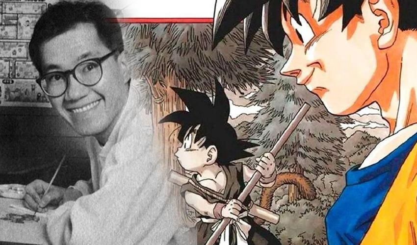

Historia de la serie
Dragon Ball (ドラゴンボール) es un manga escrito e ilustrado por Akira Toriyama. Fue publicado originalmente en la revista Shōnen Jump, de la editorial japonesa Shūeisha, entre 1984 y 1995. Su trama describe las aventuras de Gokū, un guerrero saiyajin, experto en artes marciales que en su infancia inicia sus viajes y aventuras en las que pone a prueba y mejora sus habilidades de pelea, enfrentando oponentes y protegiendo a la Tierra de otros seres que quieren conquistarla y exterminar a la humanidad. Conforme transcurre la trama, conoce a otros personajes que le ayudan en este propósito. El nombre de la serie proviene de unas esferas mágicas que al ser reunidas invocan a un dragón que concede deseos. En varias ocasiones resultan útiles tanto para Gokū y sus amigos como para la humanidad, aunque también son procuradas de forma constante por algunos seres malignos.
El manga tuvo 519 capítulos impresos recopilados en 42 volúmenes tankōbon. Dos años después de su lanzamiento, Toei Animation estrenó una adaptación anime que abarcó aproximadamente la primera mitad de la obra. Una vez concluida su transmisión en 1989 por el canal Fuji Television en Japón, Toei estrenó una continuación titulada Dragon Ball Z, la cual incorporó el contenido restante del manga. Un tercer anime producido por el mismo estudio se estrenó en 1996. Denominado Dragon Ball GT, posee un argumento inédito en cuya redacción no participó Toriyama. En 2015 comenzó a emitirse Dragon Ball Super en Fuji Television, anime que continúa los sucesos de Dragon Ball Z y que cuenta con una adaptación al manga, publicada a partir de junio del mismo año en Shōnen Jump. La violencia y desnudez presentes en algunos episodios tanto del anime como del manga provocaron la censura por parte de las distribuidoras en distintos países.
Las ventas del material impreso, cuantificadas en más de 160 millones de copias vendidas en Japón y de 300 millones a nivel mundial, llevaron a Dragon Ball a ser uno de los títulos más exitosos de Shūeisha. Las adaptaciones anime también consiguieron un éxito notable; en 1999, por ejemplo, uno de sus capítulos logró un récord de audiencia en EE. UU. en la cadena Cartoon Network, con 1.7 millones de televidentes. Dragon Ball es considerada como una de las obras más influyentes y populares de la época contemporánea, y ha servido de inspiración para otros mangakas como Eiichirō Oda, Masashi Kishimoto, Tite Kubo e Hiro Mashima, creadores de One Piece, Naruto, Bleach y Fairy Tail, respectivamente. Existe una franquicia de productos sobre el universo creado por Toriyama, que incluye películas animadas y de imágenes reales, animaciones originales, videojuegos, cartas coleccionables, figuras de acción y juguetes, entre otros. En la encuesta realizada por la cadena de televisión Japonesa TV Asahi para elegir los 100 Mejores mangas de la historia, Dragon Ball alcanzó el puesto número 5.
